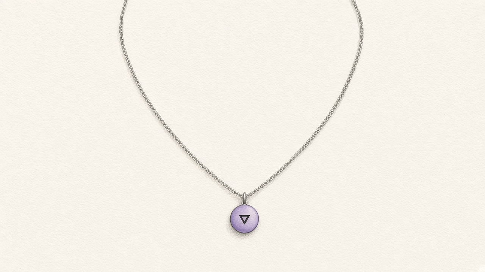
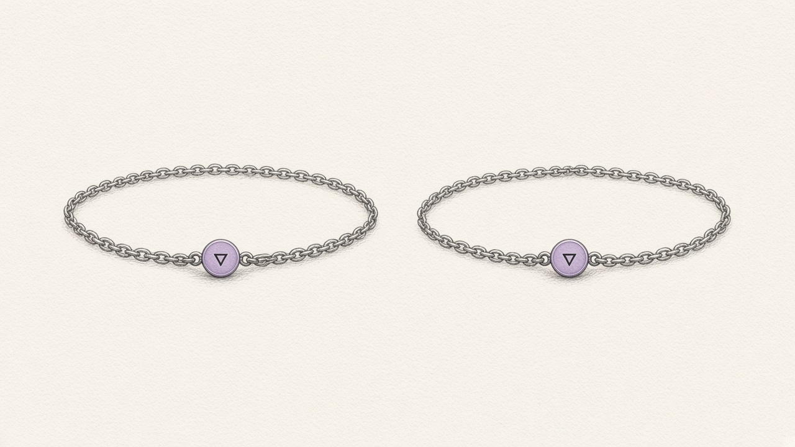

Staff retype the same note into spreadsheets, a donor list, group chats, and grant reports. Donors get called twice. A counseling detail lands in a funder report. A ride request sits in a chat.
- MentoringA missed session becomes a call this week and a line in the quarterly report.
- DonorsMaría and Maria González become one record, one gift, and a call before Give Miami Day.
- WorkshopsA school request becomes a card with the date, the language, and an owner for every step.
- CounselingThe note stays private. Funders see only “session completed.”
- VolunteersHours count once. The driver can accept the same-day shift, or decline with no penalty.
- GrantsThe draft uses only numbers already on record. Any other number is removed.
- NeighborsA public need is shared only if both organizations accept. No child’s name crosses.


It listens only while you choose. Move away and it files. Same rule as the desk: nothing listens until a person arms it, and no audio is stored.